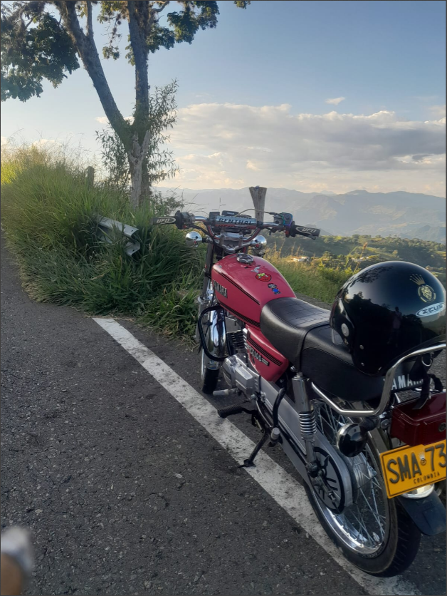
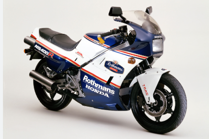

motores dos tiempos
Las motos 2 tiempos son más rápidas que las de 4 tiempos, dado que el motor gira a mayor velocidad. Como su ciclo es de solo 2 pasos, el nervio ofrece un mayor rendimiento durante la aceleración. Por estas razones, suelen ser las favoritas para competencias de enduro y motocross.
La mas rapida de su segmento
La Honda NS400R estuvo en producción entre 1985 y 1988, pero durante esos cuatro años no se vendió oficialmente en España. Sin embargo, sí se comercializó en otros mercados europeos y gracias a eso llegaron algunas a nuestro país
algunas muestras
| marca |
linea |
velocidad maxima |
| Yamaha |
Rx100 |
118 kh |
| Yamaha |
Dt175 |
140 kh |
| Honda |
Ns400 |
280 kh |
| Yamaha |
Rx King 135 |
180 kh |
| Yamaha |
Rd350 |
250 kh |

